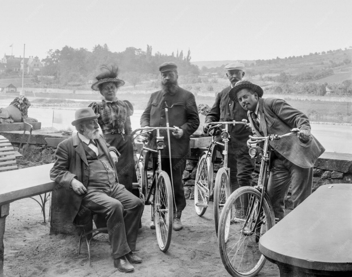

In the quiet gullies of Keswick, Cumbria, there once lived a cat who believed the valley belonged to him. Alf was his name scarred, sharp-eyed, and utterly fearless. He ruled the stone paths and shadowed corners like a king with no crown, slipping between dry-stone walls and rooftops, always coming home with the look of a bad boy who’d won another day. Everyone knew Alf. Not because he was gentle, but because he was unforgettable.
Alf’s true place, though, was beside Tom Harding, his human and lifelong companion. Wherever Tom went, Alf followed most often perched proudly atop a bicycle, paws tucked in, tail flicking like he was steering the ride himself. They were inseparable: man and cat, grease and gravel, early mornings and long rides. Alf wasn’t just company; he was constant. A quiet presence during repairs, a watchful spirit in the shop, a reminder that belonging isn’t about ownership it’s about choosing to stay.
When Alf was gone, the silence he left behind was too big to ignore. So Tom did the only thing that made sense he built something that would last. This shop stands in memory of Alf, founded on loyalty, grit, and the simple joy of two souls sharing the same road. Every bike worked on here carries a little of that story forward. And if you look closely, you might still imagine Alf there sitting tall on a cycle, ruling the place like he always did.
WHAT MAKES US
DIFFERENT
We're cyclists first, shopkeepers second. Every member of our team rides regularly, from road racing to mountain biking. That means we understand what you need because we need it too.
We keep our prices fair and our service personal. If a repair isn't worth doing, we'll tell you. If a cheaper bike suits you better than an expensive one, we'll say so. We've built this business on reputation, not hard sells.
We're part of the community. We support local cycling clubs, sponsor youth riders, and help maintain trail access in the area. When you shop with us, you're supporting local.
MEET THE TEAM

It began quietly, the way most good things do—with grease on hands, early mornings, and a shared love for the road. What started as one person fixing bikes for neighbours slowly became a place people returned to, not just for repairs, but for trust. Every spoke tightened, every chain cleaned, every conversation over the counter built something bigger than a shop. It became a meeting point for riders, racers, wanderers, and locals who believed cycling was more than a hobby—it was a way of moving through life.
Over time, the team grew. Not fast, not forced, but naturally—friends, family, and like‑minded mechanics drawn in by the same values. Everyone here rides. Everyone listens. From road cyclists chasing miles, to mountain riders chasing mud, each member brings their own story, their own scars, and their own pride in the work. There’s no sales pitch louder than honesty, and no shortcut better than doing the job properly. That belief has shaped every decision, every repair stand, and every rider who rolls back out the door.
Today, the team stands as a continuation of that first spark—still hands‑on, still local, still stubbornly independent. The faces may change, the tools may evolve, but the heart remains the same. This is a team built on shared miles, long days, and the simple joy of keeping people moving. What we do now is rooted in where we began—and everything ahead is powered by the same love for cycling that started it all.
FAMILY-RUN SINCE 1987.
@ ALFCYCLES